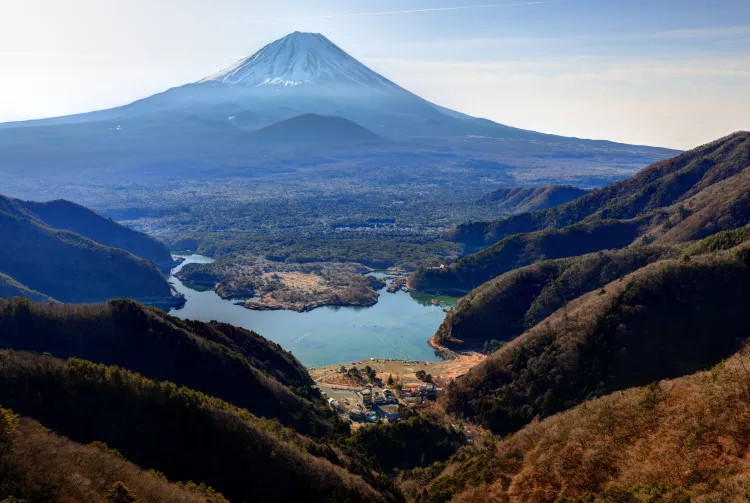

สิ่งมหัศจรรย์ทางภูมิศาสตร์

สิ่งมหัศจรรย์ทางภูมิศาสตร์
ภูเขาไฟลูกนี้ที่เกิดขึ้นประมาณ 100,000 ปีก่อนได้ปะทุอยู่บ่อยครั้งจนในท้ายที่สุดก็ได้กลายเป็นภูเขาไฟ ฟูจิซึ่งคว้าตำแหน่งภูเขาที่สูงที่สุดในญี่ปุ่นด้วยความสูง 3,776 เมตร การปะทุครั้งสุดท้ายในปี ค.ศ. 1707 กินเวลา 16 วัน โดยเถ้าภูเขาไฟลอยไปไกลถึงโตเกียว การปะทุของภูเขาไฟยังทำให้เกิดโฮเอซัง (ยอดเขาฟูจิอันดับสอง) ทะเลสาบทั้งห้าแห่งที่เชิงเขา และถ้ำมากมายใกล้ป่าอะโอคิกะฮะระ พื้นที่แห่งนี้ยังเต็มไปด้วยบ่อน้ำพุร้อนที่มีแร่ธาตุสูง ซึ่งส่งผลให้ภูมิภาคนี้เหมาะแก่การทำกิจกรรมนันทนาการกลางแจ้งและผ่อนคลาย